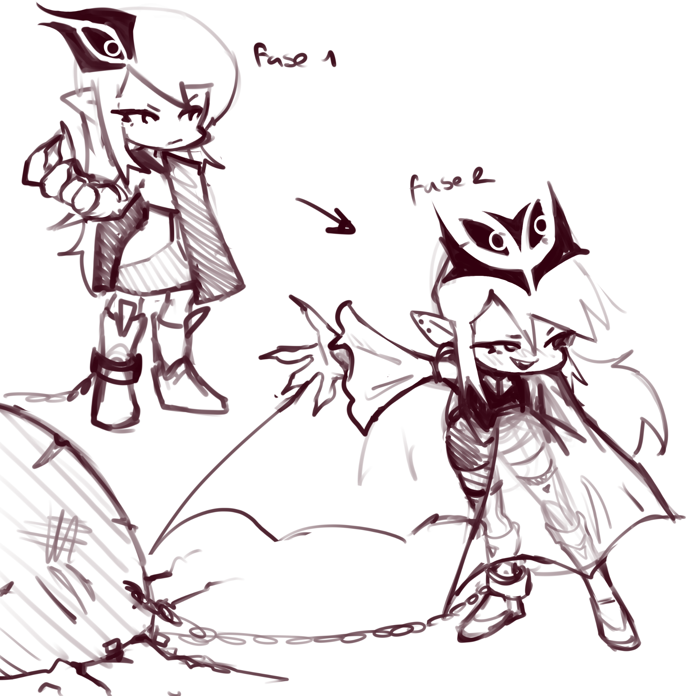
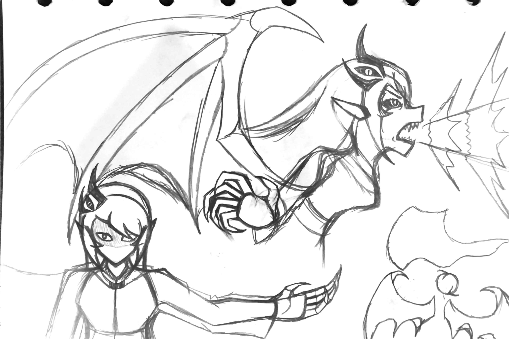
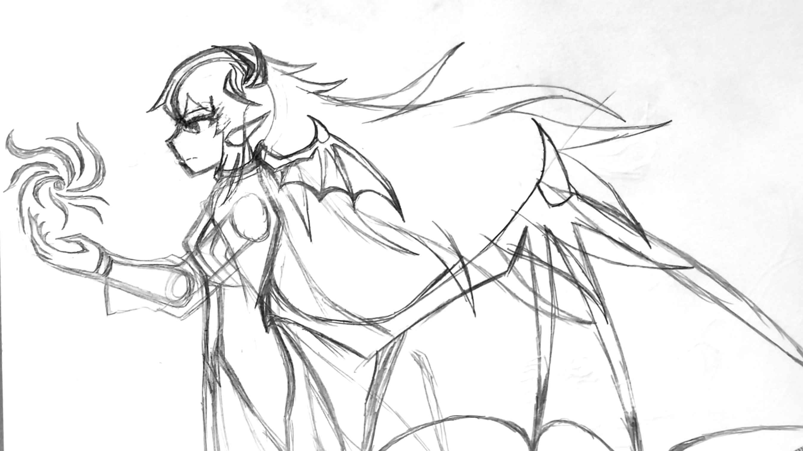
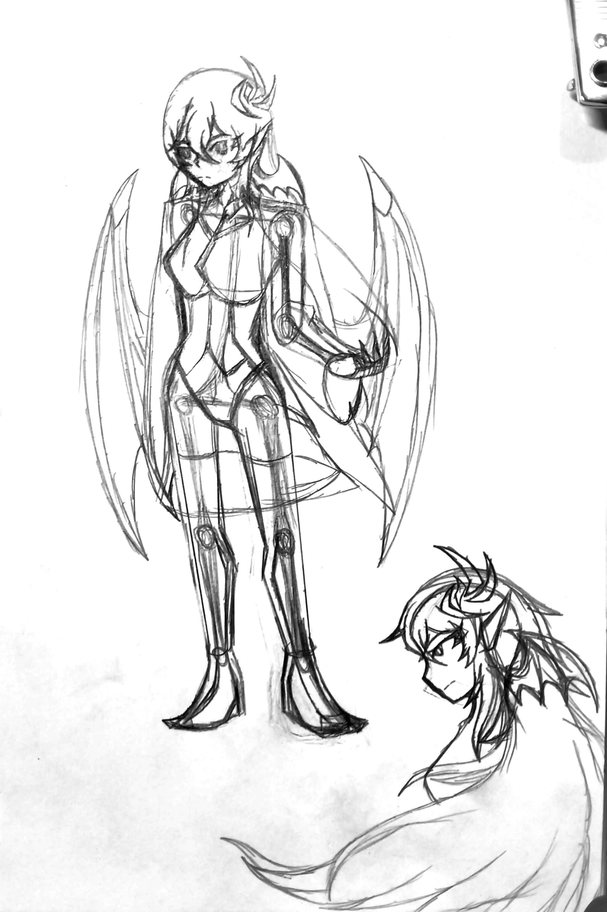

Bocetos para los sprites
Importante: estos bocetos todavía no están confirmados como diseño final. Se conservan aquí como parte del desarrollo actual de Selverria.

Rival oficial de NRX : Reality Break. Este expediente reúne material todavía en desarrollo: bocetos de sprite no definitivos, filtraciones visuales y una song leak.
Importante: estos bocetos todavía no están confirmados como diseño final. Se conservan aquí como parte del desarrollo actual de Selverria.

Estas imágenes se muestran como filtraciones. No deben interpretarse automáticamente como arte final, escena definitiva o confirmación de contenido.



Audio filtrado relacionado con Selverria. Se presenta como leak de desarrollo y no como versión final confirmada.